Doors open
Coffee and time to find the faces you haven't seen since graduation.
Maastricht Science Programme · 2011 · 2026
Saturday 10 October 2026 from 15:00 Tapijn, Maastricht
One afternoon with the people who made it: alumni from every cohort, and the staff who taught, tested and tolerated them.
MSP opened its doors in 2011. Fifteen years and one unmistakable round logo later, we're getting the family back together for an afternoon at Tapijn: alumni of every year and staff old and new.
The timing is no accident. Maastricht University celebrates its 50th birthday this year, so consider this MSP's contribution to the party season.
Coffee and time to find the faces you haven't seen since graduation.
A short hello and what MSP has been up to lately. Ten minutes, we promise.
Where a science degree actually takes you. Names on this page soon.
Settling once and for all which cohort was paying attention.
Drinks and snacks. The first two drinks are on us, the stories are on you.
The city centre is a ten minute stroll away. We suspect groups will form.
Same ritual, different class.
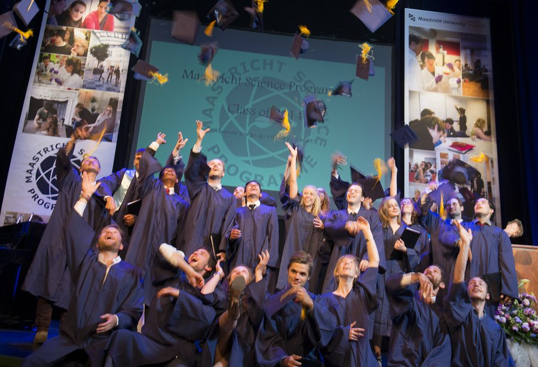
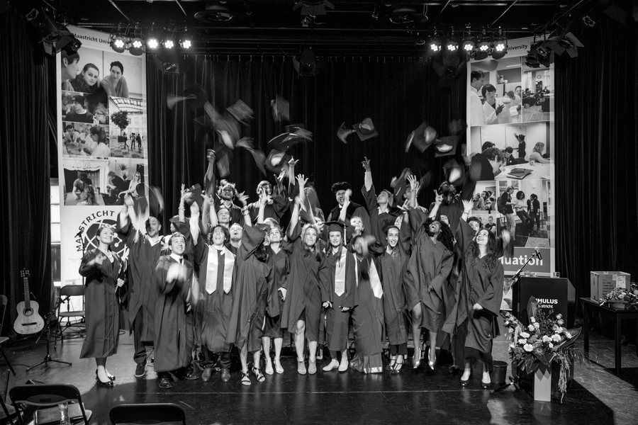
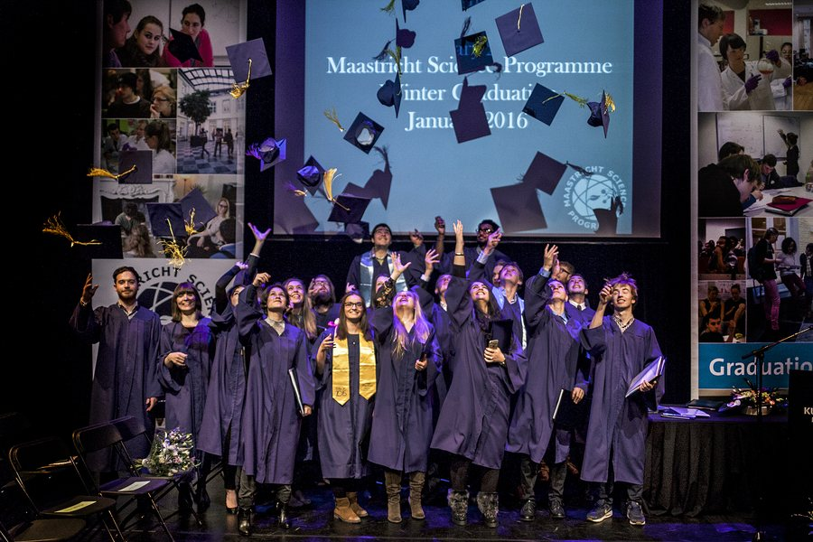
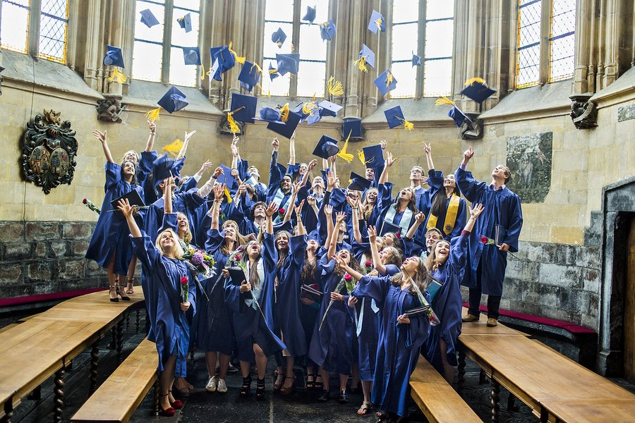
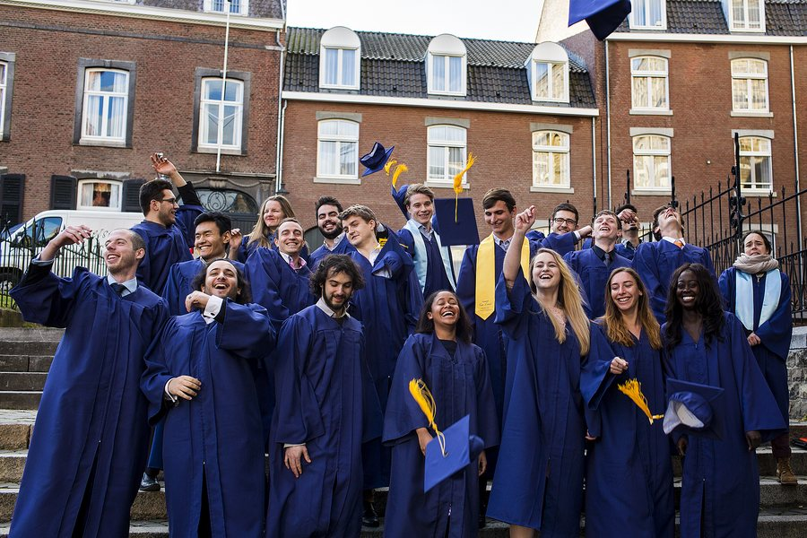
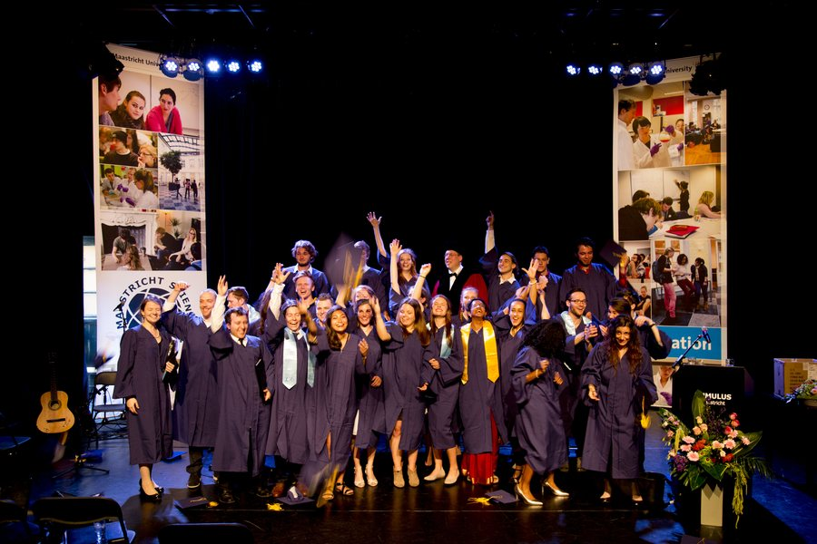


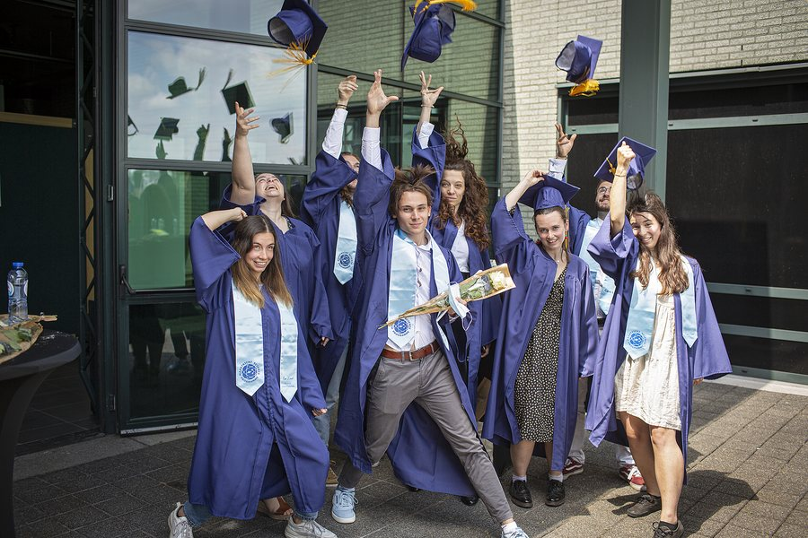
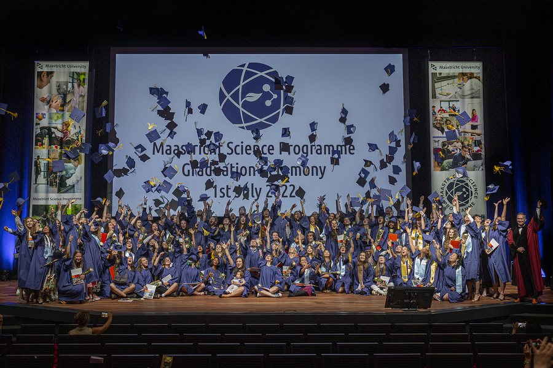
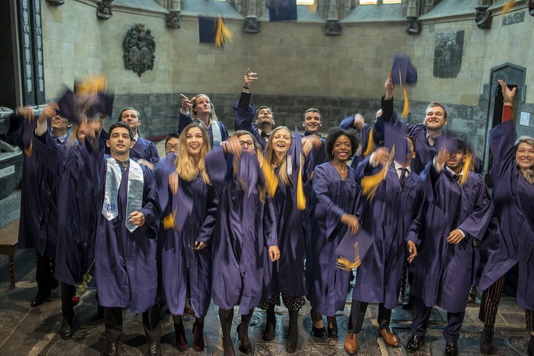
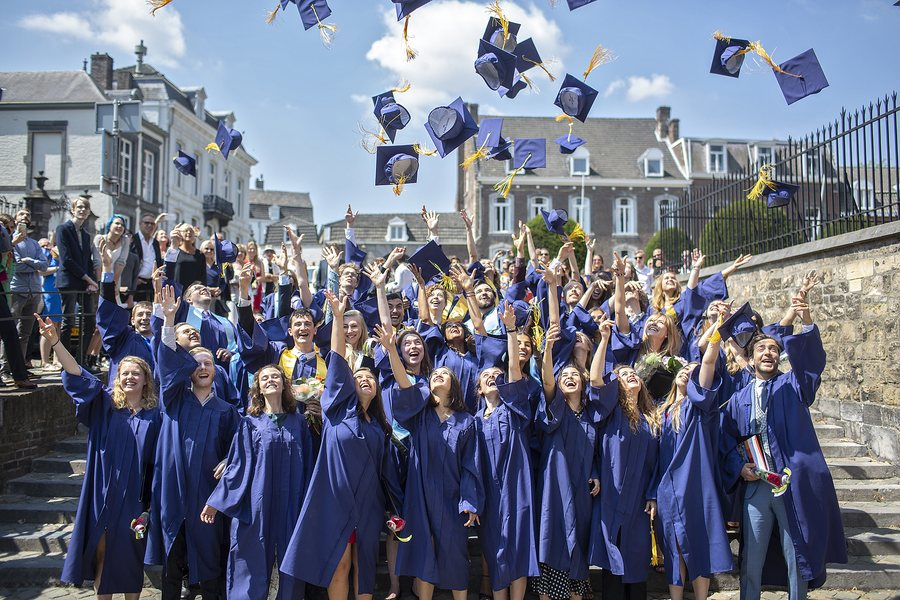
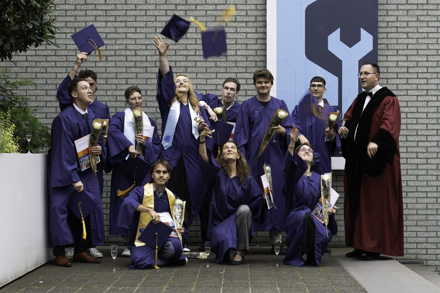
Got a toss photo from your year? Send it in and we'll hang it here.
Updated every few days.
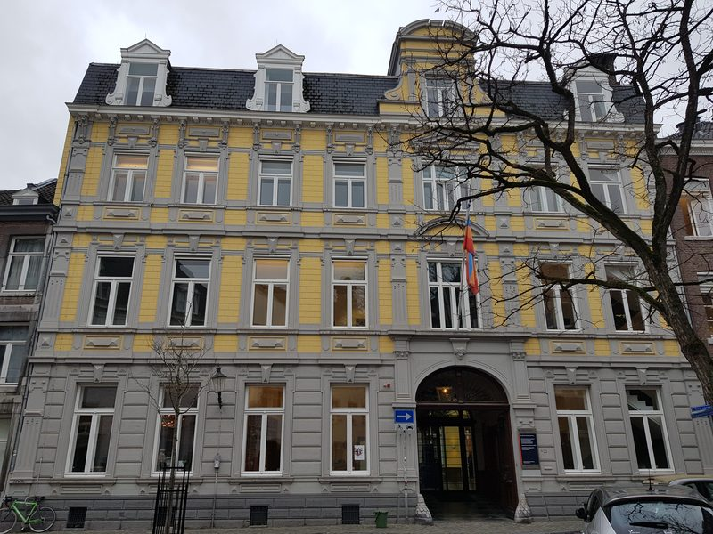
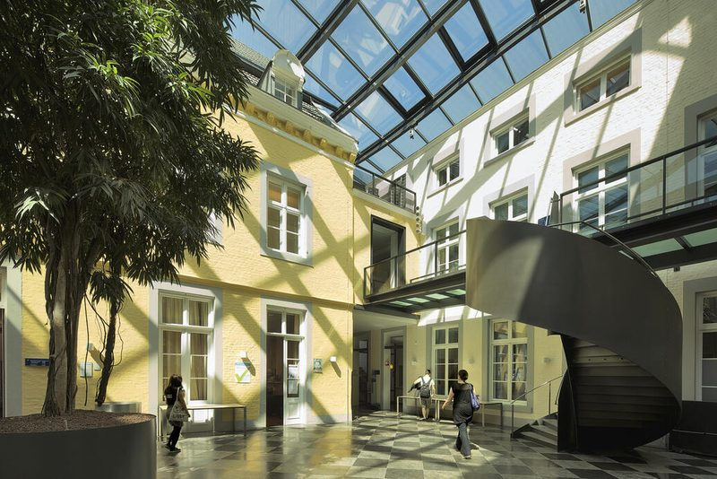
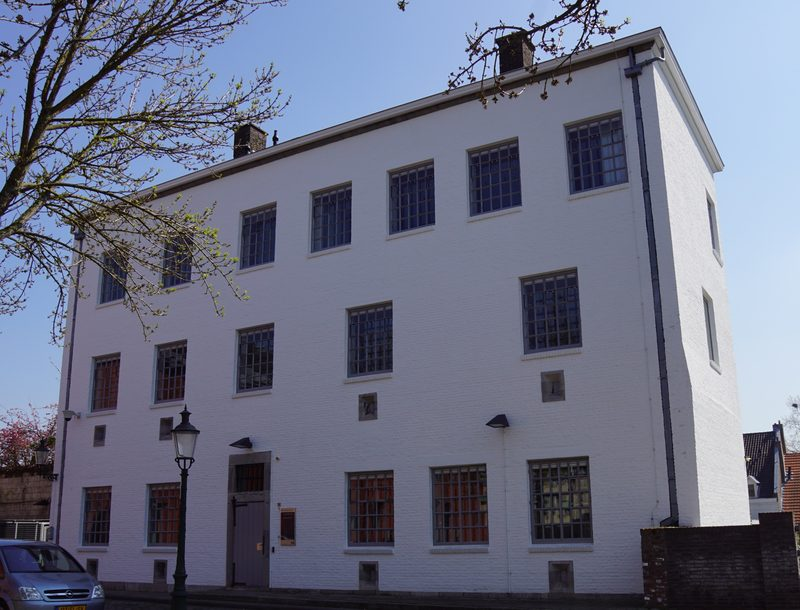
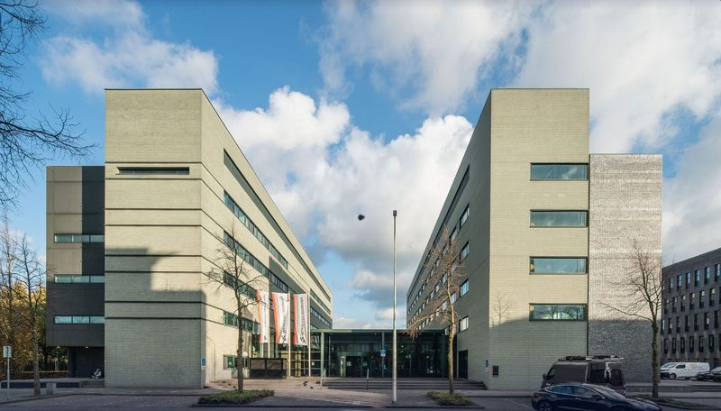
The full then-and-now gallery, fifteen years of MSP in pictures, lands here soon.
Twenty seconds, done.
Registration opens in early September, together with the invitation email. The button will be right here the moment it's live.
Got this link from a friend and want the invitation too? Come back in September, the registration link will be on this page.
Twenty spots of nostalgia, one form. See you on 10 October.